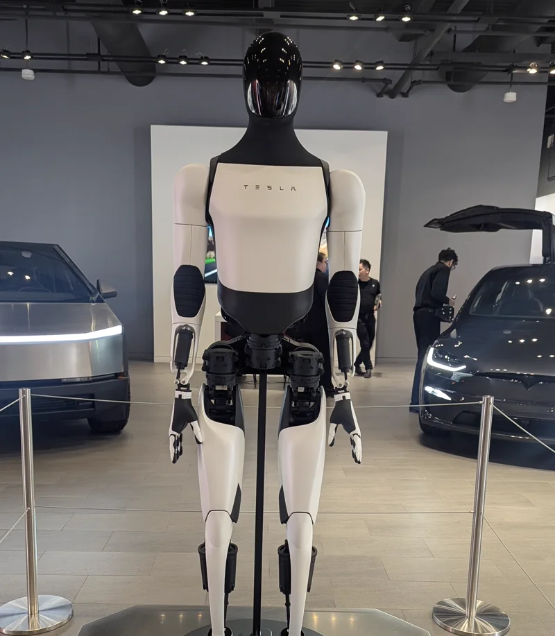

Tesla OptimusTesla, Inc.
量产野心最大的人形机器人：Fremont 首代产线已进入爬坡、德州产线在建，规划年产能 100 万台起；但第三代仍未公开发布，对外交付预计要到 2027 年底。
一页结论
01公司介绍
02公司战略
Tesla 把 Optimus 定位为“可能是有史以来最大的产品”，复用汽车的制造、电池、自动驾驶与 AI 训练能力。
- 汽车能力迁移：自动驾驶的视觉与神经网络、电池、电机与大规模制造经验直接复用S3
- 先自用再外销：先在 Tesla 工厂内部使用，验证后向工业客户交付S2
- 极致降本：目标规模化单台成本约 2 万美元S3
- 超大产能：Fremont 首代产线 + 德州第二代产线S3S1
03产品定位与产品线
| 项目 | 内容 |
|---|---|
| 形态 | 通用人形机器人S3 |
| 代际 | 第一代原型（2022）、第二代（2023-12）、第三代（未发布）S3 |
| 目标场景 | 先工厂内部搬运与重复劳动，再工业客户，长期面向家庭S2S3 |
| 售价 | 未公布，公司称由市场需求决定S3 |

04主要功能与技术路线
大脑
端到端神经网络，复用 FSD 的视觉方案德州 Cortex 训练集群S1
感知
以摄像头为主的视觉感知
本体
自研旋转与直线执行器（电机、减速器、行星滚柱丝杠）灵巧手（第三代重点升级）S5
能源
Tesla 自研电池包
制造
Fremont 首代产线（早期爬坡）德州产线（建设中）S1
05解决方案与场景
06商业模式
| 模式 | 说明 |
|---|---|
| 整机销售 | 售价未定，目标成本约 2 万美元S3 |
| 内部降本 | 先替代自有工厂的人力（分析意见） |
| 生态 | 与 xAI / SpaceXAI 等马斯克体系公司的协同（分析意见） |
07上下游供应链与渠道
上游：核心零部件
Tesla
设计、AI 训练、整机制造
下游
Tesla 自有工厂工业客户（2027 年底起）
渠道
直销（预计）
成本：有分析称借助中国供应链，单台制造成本可从约 13.1 万美元降到约 4.6 万美元，距 2 万美元目标仍有差距（第三方估算）S7。
08主要客户与落地
09营收与财务
Optimus 尚未产生对外收入，财报未单独披露其投入。Tesla 三季度收入约 280.5 亿美元，GAAP 净利润同比下降 43%S2。机器人业务的投入由汽车与储能业务现金流支撑（分析意见）。
10落地痛点
11近期动态
12潜在风险分析意见
| 风险 | 表现 | 可能程度 |
|---|---|---|
| 技术成熟度 | 灵巧手、可靠性与通用能力仍未验证S5 | 高 |
| 时间表 | 历史上多次延期S3 | 高 |
| 供应链 | 关键零部件依赖中国供应商，受贸易政策影响S4 | 中 |
| 主业压力 | 汽车利润下滑，机器人投入能否持续（分析意见） | 中 |
| 竞争 | 国内厂商价格更低、出货更早（见综合报告） | 中 |
“可能程度”为基于现有公开信息的判断，不是量化预测。
13综合结论分析意见
优势
- 汽车级制造与供应链管理
- AI 训练算力与自动驾驶技术复用
- 品牌与资本
劣势
- 量产与交付时间表反复
- 产品细节不透明
机会
- 自有工厂作为首个大客户
- 规模化后的成本优势
威胁
- 中国厂商的价格与出货速度
- 贸易政策
对 AI 产品团队的启示
- 自有场景是最好的验证场：先在自家工厂用起来，再卖给外部客户。
- 硬件产品的瓶颈在最难的零部件：灵巧手决定了量产节奏。
- 规模目标要和交付节奏匹配：过度承诺的时间表会损耗信任。
- 跨领域复用是车企做机器人的核心优势：视觉、电池、电机、制造能力可直接迁移。
信息缺口
以下信息未找到可靠的公开来源，本报告不做推测。
- 第三代 Optimus 的规格与发布时间
- 实际产量与内部部署数量（官方未披露具体数字）
- 售价
- 供应商名单（Tesla 未官方确认）
来源
A 官方 · B 权威媒体或第三方 · C 社区（仅用于口碑与线索）。访问日期均为 2026-11-02。
- S1 · ATesla Q3 2026 Update（股东信，Form 8-K 附件）美国证券交易委员会 · 2026-10-21
- S2 · BTSLA Q3 Earnings Call Highlights Autonomy and Expansion PlansYahoo Finance · 2026-10
- S3 · BOptimus (robot)（汇总公司公告与媒体报道）Wikipedia
- S4 · BTesla reportedly audits China suppliers for Optimus Gen 3 rampTrendForce · 2026-09-21
- S5 · BTesla audits China suppliers for Optimus mass productionCnEVPost · 2026-09-21
- S6 · AOptimus bot at Tesla showroom（图片）Wikimedia Commons · 2025-11-18
- S7 · CWho actually builds the joints? The humanoid actuator supplier landscapehumanoid.guide · 2026